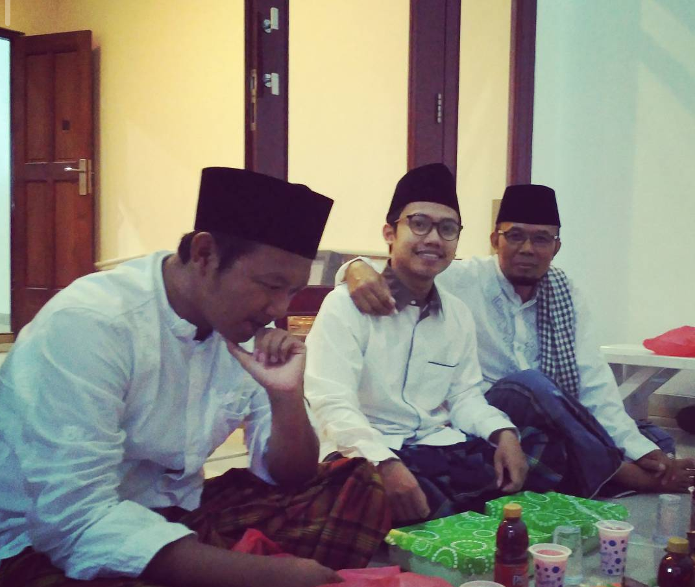

Selama Gus Mursyid melaksanakan masa baktinya dengan mengajar, berdakwah, mengamati situasi serta kondisi dan kebutuhan yang diperlukan masyarakat, ia melihat bahwa SP3 merupakan sentral dari basis umat dan pendidikan Islam di wilayah Kabupaten Mimika, Papua.
Hal ini diwujudkan dengan telah adanya Masjid Al-Fattah sebagai pusat kegiatan umat Islam, Yayasan Ma'arif yang merupakan basis pendidikan umum, dan dua TPQ yaitu TPQ Al-Fattah dan Al-Maghfiroh sebagai wadah pendidikan ke-alqur'anan di bidang qira'atul Qur'an, ditambah dengan adanya berbagai majelis keagamaan seperti majelis ta'lim, majelis dzikir, dan juga sholawat.
Menurut Gus Mursyid, sangat disayangkan jika tidak ada wadah pendidikan lanjutan setelah pendidikan di TPQ yang hanya berfokus di bidang qiro'atul Qur'an. Wadah lanjutan yang dibutuhkan adalah pesantren yang nantinya akan bergerak di bidang pengembangan dan pendalaman ilmu-ilmu yang terkait dengan ke-alqur'anan seperti tahsin Al-Qur'an (membaguskan bacaan Al-Qur'an), tahfidz Al-Qur'an (menghafal Al-Qur'an), tafsir Al-Qur'an (penjelasan makna yang terkandung dalam Al-Qur'an), dan ilmu-ilmu terkait keislaman seperti ilmu akidah, fiqih, dan akhlak, serta ilmu-ilmu yang menunjang seperti ilmu alat (nahwu, sorof), bahasa Arab dan Inggris sebagai bahasa internasional yang akan berguna nantinya ketika para santri akan meneruskan pendidikannya ke jenjang internasional.
Dari penelitian dan pengamatannya tersebut, Gus Mursyid berdoa dalam diamnya supaya di kemudian hari di SP3 berdiri pondok pesantren Ahlussunnah wal Jama'ah yang fokus dalam mempelajari Al-Qur'an. Pada saat itu beliau sama sekali tidak berkeinginan ataupun berniat untuk mendirikan sebuah pesantren.
Kunjungan Ulama NU & Peletakan Batu Pertama
Beberapa hari setelah beliau memanjatkan doanya, KH. Ma'ruf Amin, KH. Miftahul Akhyar, dan KH. Luqman Haris Dimyati melakukan kunjungan serta menghadiri acara di Masjid Al-Fattah. Kebetulan saat itu Gus Mursyid-lah yang ditunjuk sebagai ketua panitia yang mengatur susunan acara. Di saat sedang menulis susunan acara tersebut, beliau secara tiba-tiba mendapatkan hidayah dari Allah SWT dan dengan tidak sadar menuliskan "peletakan batu pertama Pondok Pesantren Ulumul Qur'an Hasyim Muzadi".
📅 28 Oktober 2017Karena saat itu pesantren belum memiliki tanah, prosesi peletakan batu pertama yang dipimpin oleh KH. Ma'ruf Amin, KH. Miftahul Akhyar, dan KH. Luqman Haris Dimyati menggunakan tanah Ma'arif NU untuk sementara sebagai simbol restu dari ulama NU.


Kesepakatan Bersama Masyarakat
Setelah prosesi peletakan batu selesai, sempat tidak ada pergerakan dari masyarakat, sampai pada tanggal 27 Desember 2017 terjadi kesepakatan antara Gus Mursyid dan masyarakat SP3. Pada saat itu, masyarakat SP3 memohon agar Gus Mursyid tidak pulang kembali ke Kendal dan melanjutkan pengabdiannya di Kabupaten Mimika. Masyarakat SP3 saat itu mengaku berkenan untuk menyediakan bangunan pesantren, asalkan Gus Mursyid yang mengelola programnya.
Sebelum menyetujui kesepakatan tersebut, Gus Mursyid terlebih dahulu meminta izin dan restu kepada orang tua dan guru-guru beliau, serta menitip doa dan restu dari Mekkah dan Madinah melalui salah satu mahasantri yang saat itu sedang umroh. Setelah disetujui, barulah beliau memutuskan untuk bersedia melanjutkan ke langkah yang lebih dalam untuk mendirikan pesantren.
Musyawarah & Tanah Hibah
Gus Mursyid mengadakan rapat musyawarah sekaligus meminta restu kepada para tokoh masyarakat di SP3. Di dalam musyawarah itu pula prosesi pemberian tanah hibah oleh Pak Edi dan Bu Ida kepada pengasuh Pondok Pesantren Ulumul Qur'an Hasyim Muzadi terjadi.
Pembentukan Tim Pandawa 5
Setelah pesantren memiliki tanah yang sah, Gus Mursyid membentuk Tim Pandawa 5 yang terdiri dari:
• Gus Mursyid sebagai Ketua
• Pak Edi sebagai Sekretaris
• Pak Kus sebagai Bendahara
• H. Feri sebagai Ketua Pembangunan
• Pak Rusminto sebagai Pengurus Perizinan Pesantren
Pemindahan Batu Pertama
Tim Pandawa 5 bersama para masyarakat melakukan prosesi pemindahan batu pertama yang dipimpin oleh Gus Mursyid, dan didoakan langsung oleh para tokoh masyarakat SP3, dimulai dari Alm. KH. Ali Ma'ruf, KH. Sobirin, Habib Helmi bin Kholid Al-Kaff, dan yang terakhir Gus Mursyid Adi Saputra.
Kerja Bakti Pembangunan
Setelah selesainya prosesi pemindahan batu pertama, para masyarakat melanjutkan program kerja bakti pembangunan. Program kerja bakti ini dilakukan secara bergantian dari setiap RT di wilayah Trans Lama, Kampung Jinbi, Trans Lokal, Trans Baru, sampai pada wilayah TSM.

Ibadah Umroh & Ziarah Wali Songo
Di tengah masa pembangunan pesantren, Gus Mursyid melaksanakan ibadah umroh pertamanya di bulan Ramadan dan meminta doa restu langsung di Makkah dan Madinah. Usai melaksanakan ibadah umrohnya, beliau melakukan kunjungan ziarah ke makam Wali Songo guna meminta restu untuk pesantren.